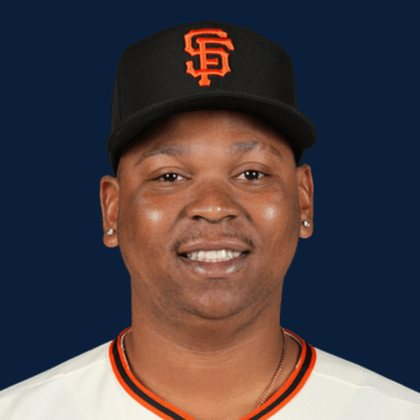

BASEBALLKEEP
Dynasty · Redraft · Diamond
Player File · 1B SF

Rafael Devers
#16 · 1B · San Francisco Giants · age 29 · B/T LR · 6' 0" / 235 lbs · MLB debut 2017 · Sanchez, Dominican Republic
Keep avg55.78
# Boards23
BK Value2,393
Spread31–88
Hitting
| Year | G | AB | R | H | 2B | HR | RBI | SB | BB | SO | AVG | OBP | SLG | OPS |
|---|---|---|---|---|---|---|---|---|---|---|---|---|---|---|
| 2026 | 126 | 476 | 66 | 116 | 31 | 25 | 69 | 0 | 52 | 141 | .244 | .317 | .471 | .788 |
| 2025 | 163 | 607 | 99 | 153 | 33 | 35 | 109 | 1 | 112 | 192 | .252 | .372 | .479 | .851 |
The Keep#55BK 2,393
The Lineup#42BK 3,113
Redraft#53BK 2,490
Baseball Savant
Starcast · spray · pitch
Percentile ranks (Starcast) plus the official Savant spray chart for bats and pitch chart for arms. Open the full Baseball Savant page.
Batter · 2026
xwOBA
49
xBA
16
xSLG
71
xISO
83
xOBP
22
Barrels
80
Barrel %
70
EV
93
Max EV
86
Hard Hit %
93
K %
19
BB %
58
Whiff %
22
Chase %
46
Speed
19
Arm
21
OAA
36
Bat Speed
45
Squared Up
44
Swing Len
63
Hits spray chart
Minus
- Board spread 31–88 (57 ranks).
Every Board
Spread 31–88 · 23 sources
| Source | Rank |
|---|---|
| FantasyPros Dynasty ECR | 31 |
| TDG Points | 38 |
| RotoWire | 49 |
| FanGraphs The Board | 49 |
| Dynasty League Baseball | 50 |
| Four-Seam Fantasy | 50 |
| Fantasy Baseballers | 52 |
| CBS Sports | 55 |
| Ottoneu | 56 |
| ESPN | 57 |
| NFBC ADP | 57 |
| Mastersball | 57 |
| Yahoo Fantasy | 57 |
| ATC ROS | 57 |
| Baseball Prospectus | 59 |
| The Dynasty Dugout | 59 |
| Baseball America | 59 |
| MLB Pipeline mix | 59 |
| Pitcher List | 60 |
| The Athletic | 60 |
| Razzball | 62 |
| Enos Slaughter | 62 |
| RotoGraphs Model | 88 |
On The Keep nearby — Jesús Made (#53) · Carson Benge (#54) · Munetaka Murakami (#56) · Daylen Lile (#57)
All players · The Keep · BK News · The Lineup · Pitchers · Calculator